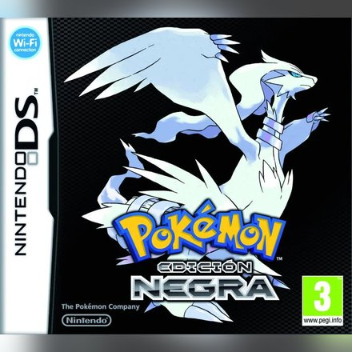
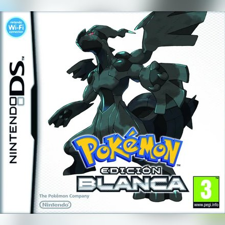
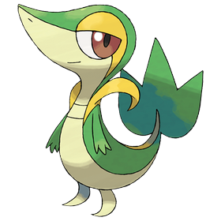
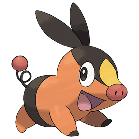
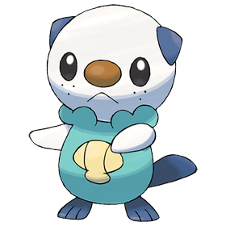

Pokémon Negro
Nintendo DS · 2010
Región de Teselia · Negro y Blanco (2010)

Mapa de la región de Teselia.

Nintendo DS · 2010

Nintendo DS · 2010
Pokémon Negro y Blanco
Pokémon Negro 2 y Blanco 2


